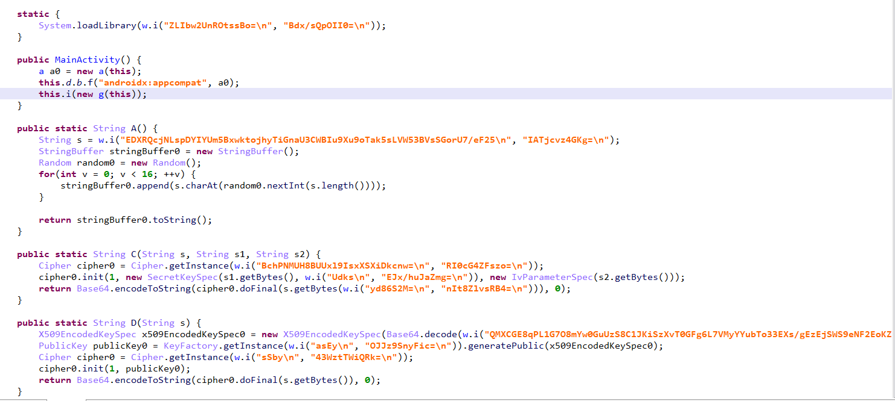
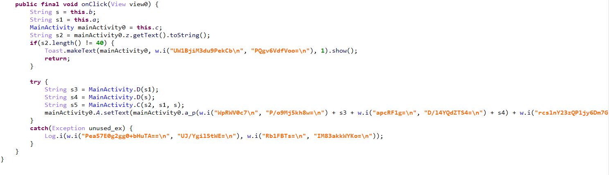
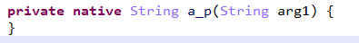
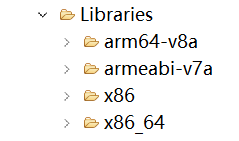
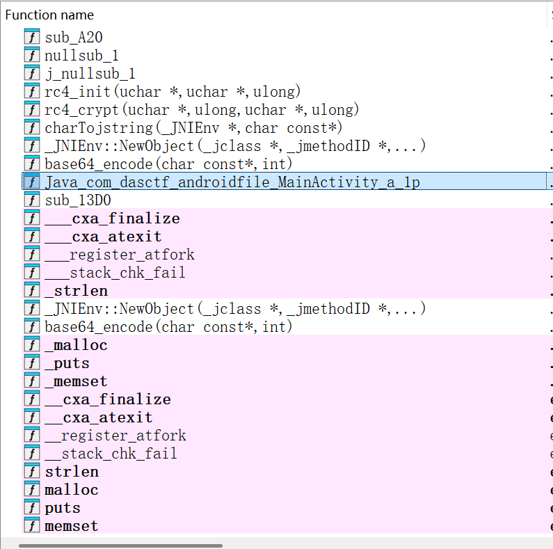
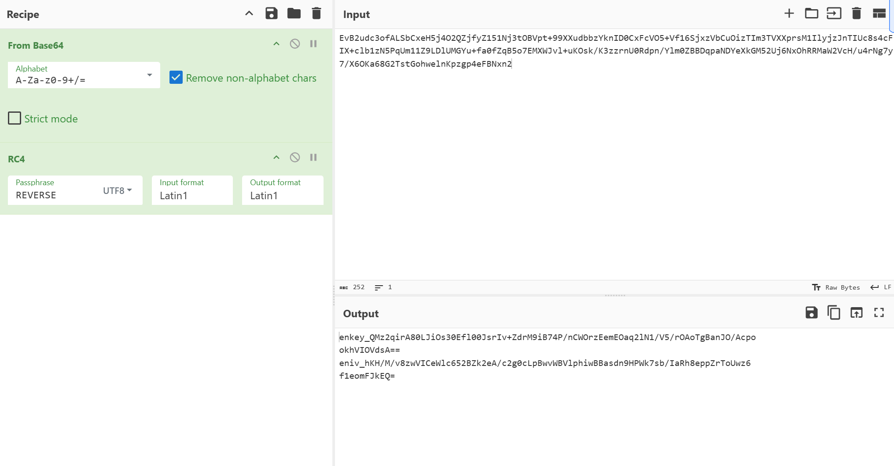
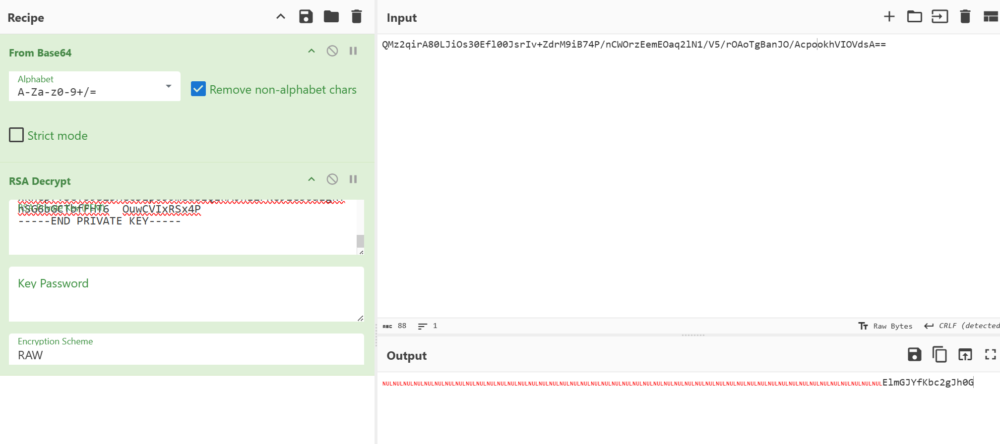
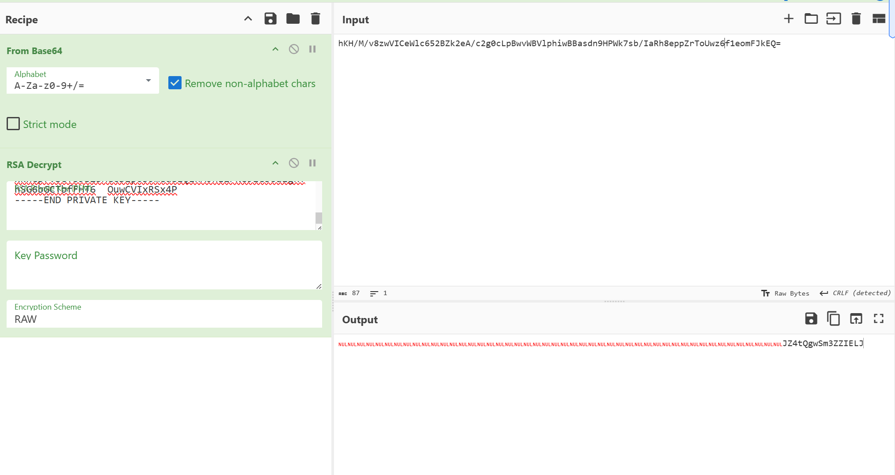
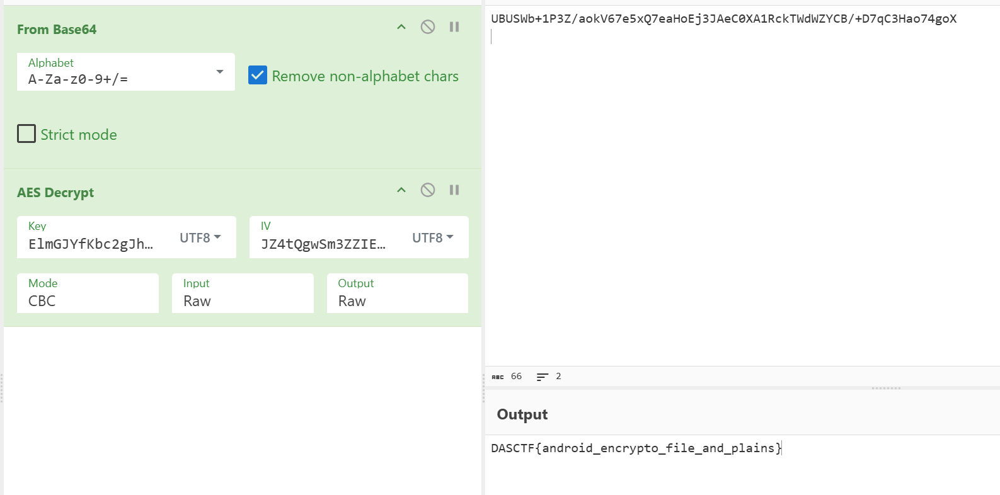

题目来源于DASCTF2025下半年比赛，由于安卓题做得还比较少，这里记录一下其中一道安卓题的复现
这道题主要是有很多字符串被混淆，而用jadx打开无法反编译混淆的函数（不知道为什么），所以这里使用了jeb，就可以正确反编译出用于混淆的函数了
ps：网上有人是jeb自动反混淆，目前还没弄清楚原理
首先用jeb打开apk文件，立刻就发现很多混淆的字符串了

这里点进去分析w.i会发现这是一个先base64解码后循环异或的混淆，由于我不知道怎么自动反混淆，所以我手动写了反混淆脚本然后手动将这些字符串反混淆（
1 | def decrypt(a,b): |
将这些函数里的字符串都反混淆之后可以发现函数C是一个AES加密，函数D是一个RSA加密，大概明白之后交叉引用一下找到调用函数的地方是一个按钮

继续反混淆一下这里的字符串
Click:
length error
enkey_
eniv_
<-encryptinput->
myandroidfile
error
上面是对输入的字符串长度限制，下面就是核心的加密了
这里函数a_p的参数根据反混淆的结果是一个拼接的字符串，而又有enkey，又有eniv，可以分析出这里有AES加密的密钥了，但是留意到s3，s4是经过D函数之后传进来的，所以应该是RSA加密后的密钥
而这个a_p函数点进去时发现是空的

发现是native，意味着这是一个本地方法，具体逻辑不是由java写的，而是用c、c++等语言编写之后，编译在动态链接库（如.so文件中），所以要分析这个函数就要去分析so文件
so文件类似于linux的dll
so文件会在libraries里面，随便找一个框架点进去就可以找到了

这里点进去之后，右键导出so文件，之后用ida打开分析

发现这里没有去除符号表，很清晰地就可以定位到这个a_p函数里了
手动分析+问ai之后可以得知这个函数进行了RC4加密，之后返回了加密后的base64编码结果
题目是给了一个截获的txt的，里面我们正好可以找到<-encryptinput->字样，那么前面的一大串内容就是RC4加密后的由RSA加密过的AESkey和iv，先拖到cyberchef里面RC4解密

然后这个RSA是由公钥加密的，解密需要私钥，而正好题目也给了pem格式的私钥，继续拖到cyberchef里面解密得到AES的key和iv
ps:这里的C和D函数加密后都返回的base64编码结果，所以解密的时候需要from base64


回到按钮那里，发现在<-encryptinput->后面还有个s5，不难发现这个就是AES加密后的结果（当然还有base64），而题目给的txt里面<-encryptinput->后面的内容就是这个s5了，直接用cyberchef解密就得到了flag
